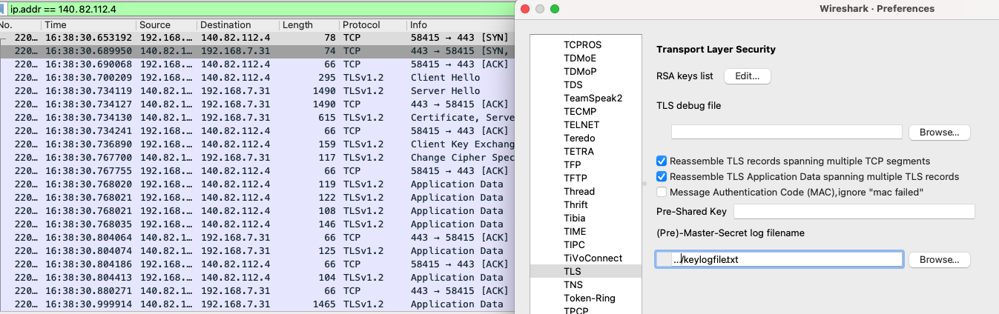
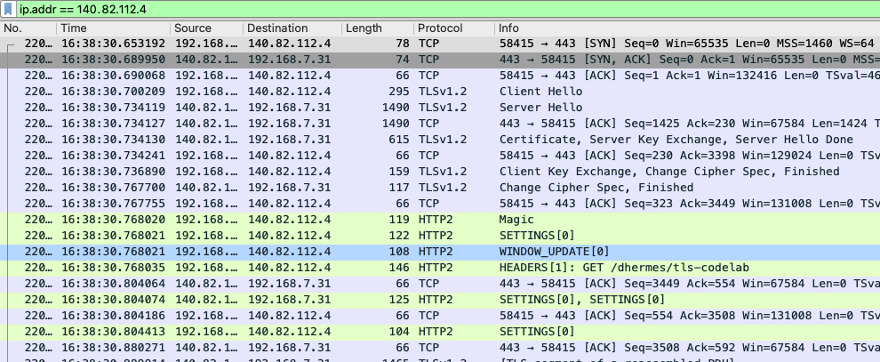

Wireshark Tooling¶
Continuing on our exploration into github.com, we’re going to use
Wireshark to capture requests sent over Wi-Fi:
Start Listening¶
Once we start capturing traffic for the en0 (Wi-Fi) interface, it can be
a bit chatty to start because there is lots of background noise going over
TCP and UDP from applications already running
We want to filter this down just to the specific IP (and port, if needed) for the request we’re trying to capture.
Fire Off Request¶
After starting our packet capture, make a curl request in verbose mode so
we can see which IP was used to reach the server. In our case, we only
care about the request metadata so we send the response body to /dev/null
and silence the download progress bar (via --silent):
$ curl --verbose --silent --output /dev/null https://github.com/dhermes/tls-codelab
* Trying 140.82.114.3...
* TCP_NODELAY set
* Connected to github.com (140.82.114.3) port 443 (#0)
* ALPN, offering h2
* ALPN, offering http/1.1
* successfully set certificate verify locations:
* CAfile: /etc/ssl/cert.pem
CApath: none
* TLSv1.2 (OUT), TLS handshake, Client hello (1):
} [224 bytes data]
* TLSv1.2 (IN), TLS handshake, Server hello (2):
{ [102 bytes data]
* TLSv1.2 (IN), TLS handshake, Certificate (11):
{ [2971 bytes data]
* TLSv1.2 (IN), TLS handshake, Server key exchange (12):
{ [300 bytes data]
* TLSv1.2 (IN), TLS handshake, Server finished (14):
{ [4 bytes data]
* TLSv1.2 (OUT), TLS handshake, Client key exchange (16):
} [37 bytes data]
* TLSv1.2 (OUT), TLS change cipher, Change cipher spec (1):
} [1 bytes data]
* TLSv1.2 (OUT), TLS handshake, Finished (20):
} [16 bytes data]
* TLSv1.2 (IN), TLS change cipher, Change cipher spec (1):
{ [1 bytes data]
* TLSv1.2 (IN), TLS handshake, Finished (20):
{ [16 bytes data]
* SSL connection using TLSv1.2 / ECDHE-RSA-AES128-GCM-SHA256
* ALPN, server accepted to use h2
* Server certificate:
* subject: C=US; ST=California; L=San Francisco; O=GitHub, Inc.; CN=github.com
* start date: May 5 00:00:00 2020 GMT
* expire date: May 10 12:00:00 2022 GMT
* subjectAltName: host "github.com" matched cert's "github.com"
* issuer: C=US; O=DigiCert Inc; OU=www.digicert.com; CN=DigiCert SHA2 High Assurance Server CA
* SSL certificate verify ok.
* Using HTTP2, server supports multi-use
* Connection state changed (HTTP/2 confirmed)
* Copying HTTP/2 data in stream buffer to connection buffer after upgrade: len=0
* Using Stream ID: 1 (easy handle 0x7fcdfe00fe00)
> GET /dhermes/tls-codelab HTTP/2
> Host: github.com
> User-Agent: curl/7.64.1
> Accept: */*
>
* Connection state changed (MAX_CONCURRENT_STREAMS == 100)!
< HTTP/2 200
< server: GitHub.com
< date: Fri, 05 Feb 2021 16:20:07 GMT
< content-type: text/html; charset=utf-8
< vary: X-PJAX, Accept-Encoding, Accept, X-Requested-With
< etag: W/"06d39fc8a2df550f10c332bdd7c74fe7"
< cache-control: max-age=0, private, must-revalidate
< strict-transport-security: max-age=31536000; includeSubdomains; preload
< x-frame-options: deny
< x-content-type-options: nosniff
< x-xss-protection: 1; mode=block
< referrer-policy: no-referrer-when-downgrade
< expect-ct: max-age=2592000, report-uri="https://api.github.com/_private/browser/errors"
< content-security-policy: default-src 'none'; base-uri 'self'; block-all-mixed-content; connect-src 'self' uploads.github.com www.githubstatus.com collector.githubapp.com api.github.com github-cloud.s3.amazonaws.com github-production-repository-file-5c1aeb.s3.amazonaws.com github-production-upload-manifest-file-7fdce7.s3.amazonaws.com github-production-user-asset-6210df.s3.amazonaws.com cdn.optimizely.com logx.optimizely.com/v1/events wss://alive.github.com online.visualstudio.com/api/v1/locations; font-src github.githubassets.com; form-action 'self' github.com gist.github.com; frame-ancestors 'none'; frame-src render.githubusercontent.com; img-src 'self' data: github.githubassets.com identicons.github.com collector.githubapp.com github-cloud.s3.amazonaws.com *.githubusercontent.com; manifest-src 'self'; media-src 'none'; script-src github.githubassets.com; style-src 'unsafe-inline' github.githubassets.com; worker-src github.com/socket-worker-5029ae85.js gist.github.com/socket-worker-5029ae85.js
< set-cookie: _gh_sess=bRegQQVDKcdFlXHgBVJXQk8AUbnh%2BiCjlc1Bre%2FF4aFg2WUHk5LumSd02NDEXVJTCyiB7Qzu%2Bt7xqYZtKICABciFfQ9%2FpaA3hrVnd%2FJgLvM%2BFySzB79VT9qpV4XCrTqgmxfvGDAiAOootko%2FPjp3hlom7MEwGPNJdTDIQ13osPhs%2BDXMvphONm0fs6yynRtCXPd%2F8AcJBO%2BkA1V5Z1BkVq%2B8tjRyRED2qAugBYnFlWKd2BmP9NBAiv8U%2BXmOsWf%2FWb3t38u0rcHq8nB0xv50bg%3D%3D--eTzjDrx16Ena1y%2BY--LirGYnMUNISvY3yrD9fTAQ%3D%3D; Path=/; HttpOnly; Secure; SameSite=Lax
< set-cookie: _octo=GH1.1.829372991.1612542022; Path=/; Domain=github.com; Expires=Sat, 05 Feb 2022 16:20:22 GMT; Secure; SameSite=Lax
< set-cookie: logged_in=no; Path=/; Domain=github.com; Expires=Sat, 05 Feb 2022 16:20:22 GMT; HttpOnly; Secure; SameSite=Lax
< accept-ranges: bytes
< x-github-request-id: E3BD:7E8C:6AC176:A425C5:601D7046
<
{ [1361 bytes data]
* Connection #0 to host github.com left intact
* Closing connection 0
Filter Packets¶
We see even from the curl --verbose output a series of TLSv1.2
“Record Layers”, e.g. Client hello (1), Server hello (2). Both
The Illustrated TLS (1.2) Connection and
The Illustrated TLS 1.3 Connection are great resources to understand
each record layer.
Since we’ve
narrowed down the IP address as 140.82.114.3, we can now filter our
captured packets
We can see a series of back-and-forth packets sent to / from the server.
Some packets (e.g. number 80 and 82) only contain a single record layer.
Other packets (e.g. number 84, 86 and 87) contain multiple record layers. For
example the Certificate (11) record layer in packet 84 shows the
leaf and intermediate presented by the server as we previously saw:
One downside here is that, since the whole point of TLS is encryption, the packets corresponding to the actual application protocol (here HTTP) are encrypted. This means our packet capture enables only a certain type of protocol level debugging.
However, we have a solution for this, by setting the SSLKEYLOGFILE
environment variable, curl will write out the session master key for the
client:
$ SSLKEYLOGFILE=./keylogfile.txt curl \
> --verbose --silent --output /dev/null \
> https://github.com/dhermes/tls-codelab
* Trying 140.82.112.4...
* TCP_NODELAY set
* Connected to github.com (140.82.112.4) port 443 (#0)
...
$
$ cat ./keylogfile.txt
CLIENT_RANDOM A14CE966C29023A2EB922CD00EFD297606E6F4430FD6168278D46DF555AC3757 40D39E1231201F8AB96706094DF31EFCB585A213B696BD80B507A43A809EDEAF62E27633E17182259806A01CCBD0B7DA
We can set this path for the TLS protocol in the Wireshark settings
and after doing so, the packets are decrypted
